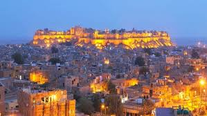
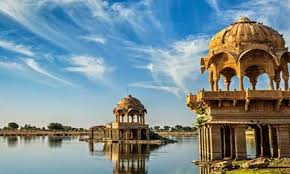
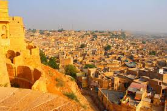
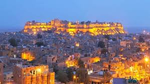
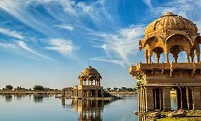
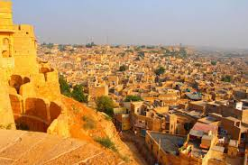
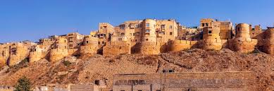
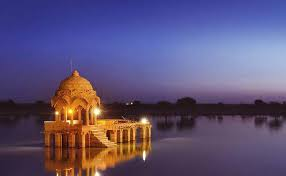
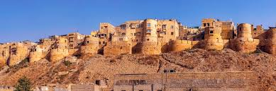
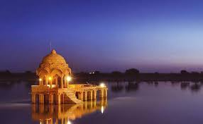

Jaisalmer Fort
Living fort with palaces, markets, viewpoints and Jain temples.
Jaisalmer is known as the Golden City thanks to its yellow sandstone buildings glowing at sunrise and sunset. The Jaisalmer Fort is one of the world’s few living forts with shops, homes and temples inside.
Nearby Sam Sand Dunes offer camel rides, jeep safaris and desert camps, making it one of Rajasthan’s most scenic experiences.
Living fort with palaces, markets, viewpoints and Jain temples.
Iconic Thar Desert area for camel rides and dune sunsets.
Beautiful carved haveli cluster with detailed sandstone work.
Sunrise point with temples, ghats and quiet waters.
Explore narrow lanes, viewpoints and the historic palace complex.
Classic desert experience with camel or jeep rides on the dunes.
Incredibly detailed sandstone artwork across five haveli buildings.
Desert + Heritage combo.
Quick trip
Balanced
3–4 days
Unique heritage stays with rooftop views of golden sandstone.
Perfect for history lovers.
Quiet area close to viewpoints and old town lanes.
Great for families.
Luxury tents, cultural shows and starry desert nights.
Best for unique experiences.
 






 



Desert climate & fort navigation.